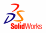

|
 Katýlacak
kiþilerin isimlerini en geç 17 Ekim 2003 Cuma akþamýna kadar
ilgili banka dekontu ile tarafýmýza bildirip, kayýt olmasýný
rica ederiz. Katýlým ücreti kiþi baþýna 20 milyon TL olup,
Ýþ Bankasý Gayrettepe Þubesi 0389500 hesabýna 17 Ekim 2003
akþamýna kadar yapabilirsiniz. Katýlacak
kiþilerin isimlerini en geç 17 Ekim 2003 Cuma akþamýna kadar
ilgili banka dekontu ile tarafýmýza bildirip, kayýt olmasýný
rica ederiz. Katýlým ücreti kiþi baþýna 20 milyon TL olup,
Ýþ Bankasý Gayrettepe Þubesi 0389500 hesabýna 17 Ekim 2003
akþamýna kadar yapabilirsiniz.
Seminerimizde
SolidWorks ve Dassault Systems þirketlerinin üst düzey yöneticileri,
Konuk konuþmacýmýz Sayýn Hýncal Uluç ile iþ ve sanat dünyasýndan
çeþitli sürpriz konuklar bizlerle birlikte bulunacaktýr.
17
Ekim 2003 tarihine kadar kayýt olan her katýlýmcý, kendileri
için hazýrlayacaðýmýz katýlýmcý setini alacak ve seminerimiz
süresince yapýlacak çekiliþlerde çeþitli hediyeler kazanabilme
þansýna sahip olacaklardýr.
Yemek
12:30-14:00
SolidWorks
2004 yenilikleri:
Part
- Tüketici Ürün Tasarýmý
- Unsurlarýn
biçimini bozabilme
- Delete
ve Fill
- Loft
Kontrol Noktalar
Part
- Yüzey Ýþlemleri
- Yüzeyde
Draft
- Geliþtirilmiþ
Yüzey Trimi
- Deðiþken
Yarýçaplý Filletler
- Ruled
Surface
- Geliþtirilmiþ
Fill Komutu
Part
- Kalýp Tasarýmý
- Bölüm
Yüzeyi Çizgisi Oluþturabilme
- Yüzey
Kesme
- Bölüm
Yüzeyi
- Otomatik
Core/Cavity
- Ekonomik
Analiz
- Kalýnlýk
Kontrolü
COSMOSXpress
- Sonuçlarýn
COSMOSWorks kullanýmý için kaydedilmesi
- Mesh
Ýþlemleri
- Min/Max
Gerilmeler
- SolidWorks
Malzeme Desteði
3D
Content Central
- Tedarikçi
Firmalarýn Sertifikalý Modelleri
- Milyonlarca
Sertifikalý Model
- 18
Tane Canlý Tedarikçi (4 tane daha uygulama aþamasýnda)
- Kullanýcý
Kütüphane Modelleri
- Binlerce
Kullanýcý Modeli
- 72
Model Kategorisi
PhotoWorks
2. Sürüm
- Daha
Az Çaba ile Daha Ýyi Görüntüler
- Dolaylý
Iþýklandýrma (Radiosity)
- Dýþ
Hat Renderleme
- Saydamlýklar
& Gölgeler
eDrawing'i
Destekleyen Eklemeler
- Basit
ve Geliþmiþ UI
- Save
As
- .ZIP
(.exe)
- .STL
- Animasyon
düzenleme
- Perspektif
Görünüþü
- Kapalý
Kesit Alma
- UNIX
Desteði
PDMWorks
Eklemeleri
- Vault'ta
Yeniden Adlandýrma
- AutoCAD
Plug-In
- Hacim
Yükleme
- Özellik/Nitelik
Haritasý Çýkarma
- Arþiv/Onarým
- Konfigürasyon
- Öngörünüþleri
- eDrawings
Viewer
Yeni
Ürün- SolidWorks Routing
- Çeþitli
Boru & Tüp Yollarý
- Dikey
& Bükülgen Borular
- Parçalarýn
Bitim Noktasý Davranýþý ile Kesilmesi (BOM'da)
- Ýmalat
Ýçin Büküm Tablosu
- Boru
Ýçeriði
Ýrtibat:
Selda
Uykur
CAD/CAM Departmaný, Eðitim Kurumlarý ve Halkla iliþkiler Sorumlusu
suykur@umtas.com.tr
Umtaþ
Uluslararasý Makine Ticaret A.Þ.
Büyükdere Cad. Stad Han No:85 K:6-7
34394 Mecidiyeköy/ Ýstanbul
Tel: 90 212 275 87 81 Faks: 90 212 275 87 84
www.umtas.com.tr
|